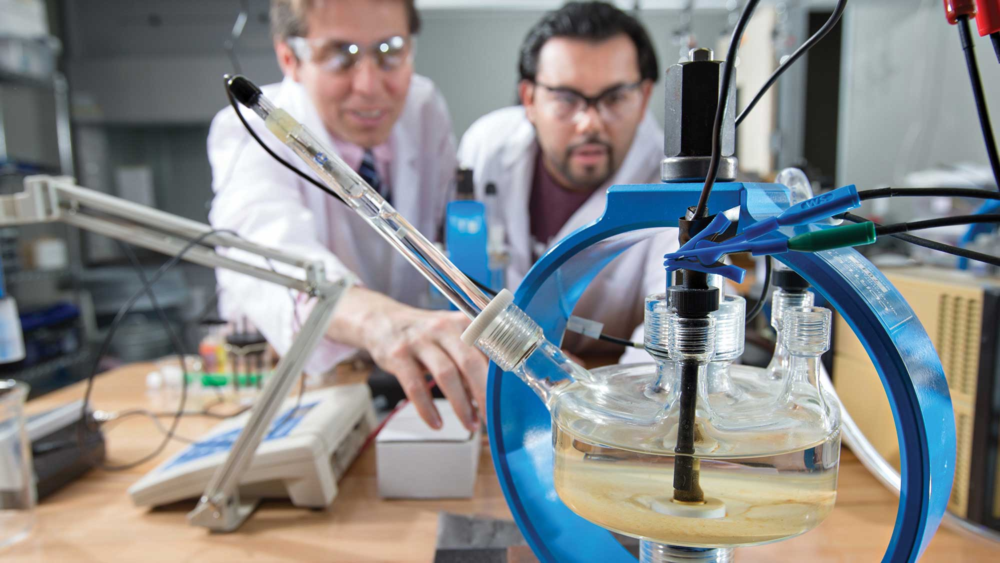

Mechanical Engineering Program
About this Program
Mechanical engineering is a broad and dynamic area that deals with the design, analysis, production, and maintenance of mechanical systems using the concepts of physics, mathematics, and material science. Among the oldest and most comprehensive engineering specialties is this one.


Our Services
-

Design and Manufacturing: Mechanical engineers design tools, machines, and mechanical systems.
-
Thermodynamics and Heat Transfer: This field focuses on the concepts of energy, heat, and their transformation.
-
Fluid Mechanics: Study of fluids and the forces acting on them. This covers everything from robotics to automobile engines. Designing anything that involves flow, like air conditioning systems, pipelines, or even aerodynamic cars, requires an understanding of materials science the study of the characteristics of materials and how to use them in engineering.
-

Materials Science: Understanding the properties of materials and how they can be used in engineering applications.
-

Dynamics and Control Systems: Study of forces and motion in mechanical systems. Control systems ensure machines operate within desired parameters.
Note
Mechanical engineering is fundamental to the development of new technologies and plays a crucial role in industries worldwide.
Members
Jaucian, Adrian L.
De Chaves, James Patrick
plandano, Ian